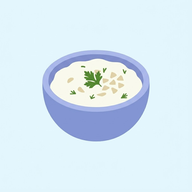

English is shown first. Tap any card to reveal or hide its Greek answer.
Add cards directly to an existing category. Use Added (Special) only for unusual cards that do not fit elsewhere.
Partial matches work. Separate alternatives with commas to find any of them. Greek search ignores accents.
All starred cards appear here as full flashcards. Tap a card to flip it.
Review this collection as full flashcards. Remove individual cards here, or study the collection from the main Study screen.
Choose several grammar targets and vocabulary sources. The app creates a prompt for ChatGPT, Claude, or Gemini with 50 simple, conversational exercises.
The first choice is remembered here. Favourites still obey the same session tier toggles.
Added cards stay alongside the built-in deck. Export them before moving to another device.
Moves your progress, word edits, notes, favourites, settings, manual selections, and imported cards between devices. Export from the device you used most recently, then import on the other device.
Restoring replaces the saved app data in this browser. The newest imported backup wins.
Notes stay saved after you tap Save. To use them in another browser, export the notes file here and import it there; notes reconnect using each card’s stable ID.
Open this HTML directly in Safari/Chrome, or host the PWA ZIP on Netlify, GitHub Pages, or Vercel. For Add to Home Screen + offline caching, use the ZIP package so manifest.webmanifest and sw.js are present.
Progress and notes are saved in this browser. Notes can be moved using the backup in Settings.